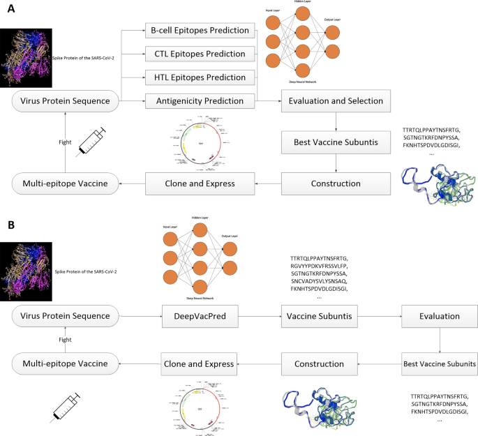
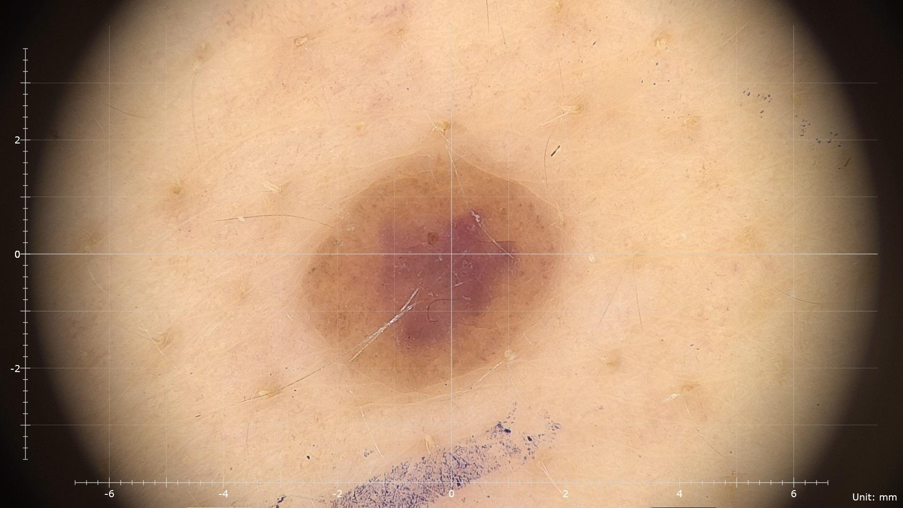
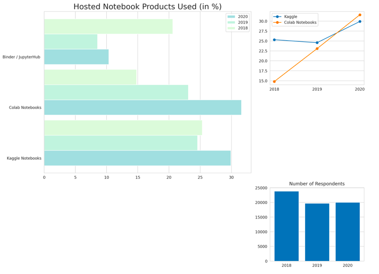
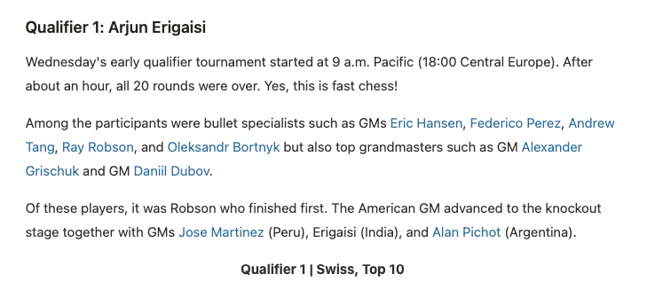

Projects
These are a few of the projects I have worked on (Click on the imaegs to go to the Github pages)

Diabetes-mellitus Prediction
[Scikit-learn, Xgboost, Keras]
- Predicted whether patients had Diabetes-mellitus when they came to the ICU
- Used data from MIT’s GOSSIS Dataset
- Blended 2 XGB and 1 NN model
- Got a ROC AUC Score of 0.8726
Cassava Leaf Disease Detection
[Pandas, OpenCV, Pytorch]
- Classified whether Cassava leaf was healthy or diseased using CNN
- Used 21,367 labeled Cassava leaf images
- Used efficient-net-b4 pretrained model achitecture and image augmentations
- Got a ROC AUC Score of 0.879

Melanoma Skin Cancer Detection
[Pandas, OpenCV, Pytorch]
- Classified whether Melanoma Cancer was malignant or benign using CNN
- Used 32,542 labeled Skin Lesion images
- Used efficient-net-b4 pretrained model achitecture and image augmentations
- Got a ROC AUC Score of 0.904

Kaggle Survey Data Analysis
[Pandas, Matplotlib, Seaborn]
- Analyzed the competition between Google Colab and Kaggle
- Used kaggle data science survey 2021 data
- Used numpy and pandas to clean and explore the data
- Created data visualizations using matplotlib and seaborn

Chess Analysis Generation [Ongoing]
WIP, WIP, WIP

Chess winner prediction [Ongoing]
WIP, WIP, WIP